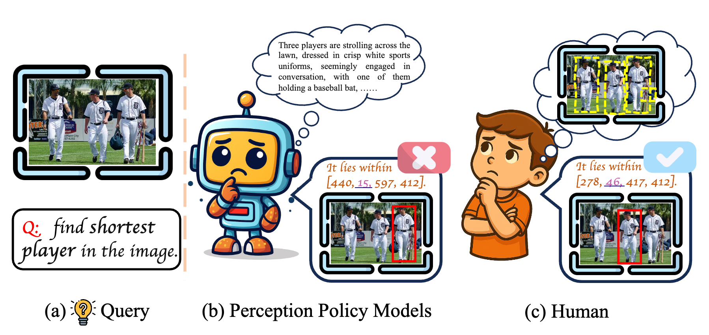
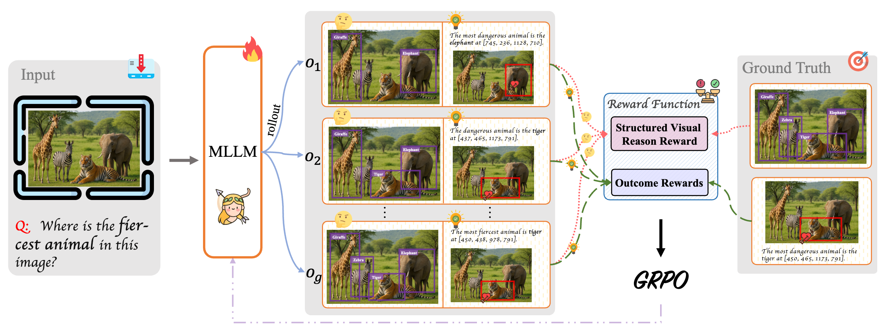
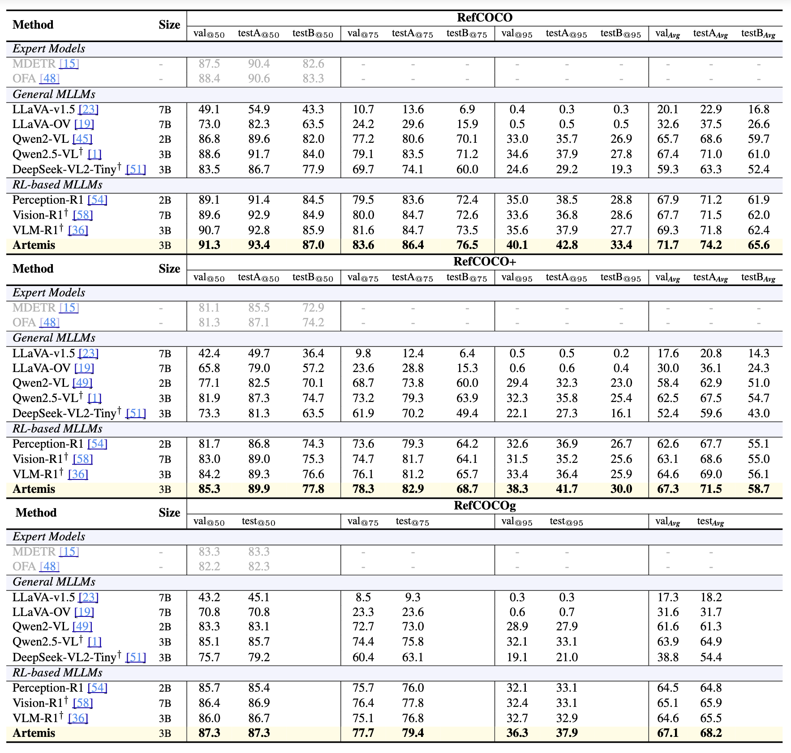
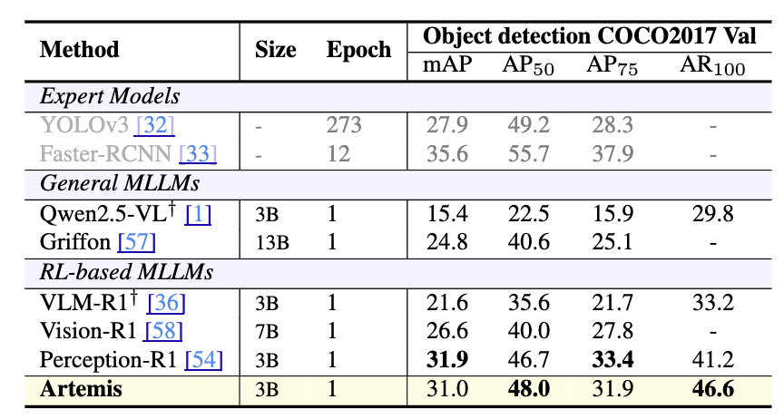
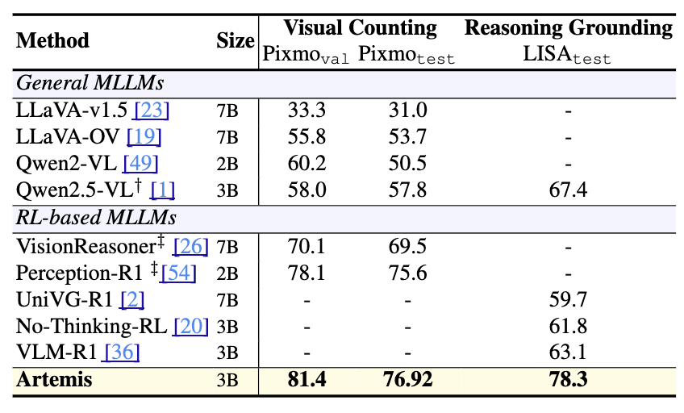
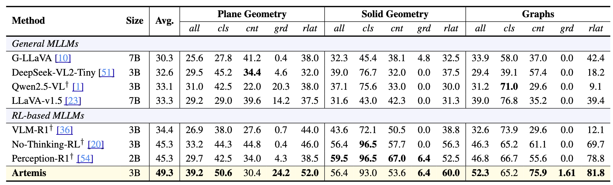
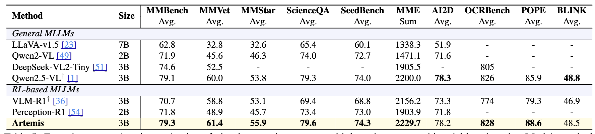
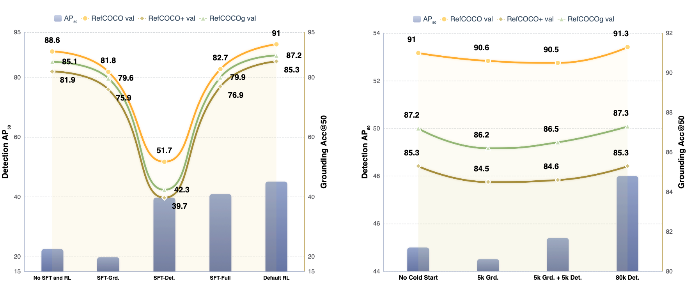

Recent reinforcement-learning frameworks for visual perception policy have begun to incorporate intermediate reasoning chains expressed in natural language. Empirical observations indicate that such purely linguistic intermediate reasoning often reduces performance on perception tasks. We argue that the core issue lies not in reasoning per se but in the form of reasoning: while these chains perform semantic reasoning in an unstructured linguistic space, visual perception requires reasoning in a spatial and object-centric space. In response, we introduce Artemis, a perception-policy learning framework that performs structured proposal-based reasoning, where each intermediate step is represented as a (label, bounding-box) pair capturing a verifiable visual state. This design enables explicit tracking of intermediate states, direct supervision for proposal quality, and avoids ambiguity introduced by language-based reasoning. Artemis is built on Qwen2.5-VL-3B, achieves strong performance on grounding and detection task and exhibits substantial generalization to counting and geometric-perception tasks. The consistent improvements across these diverse settings confirm that aligning reasoning with spatial representations enhances perception-policy learning. Owing to its strengthened visual reasoning, Artemis also achieves competitive performance on general MLLM benchmarks, illustrating that spatially grounded reasoning provides a principled route toward scalable and general perception policies.

Motivation of Artemis. Comparison between current perception-policy models and human perception. (a) Query: find the shortest player. (b) Perception–policy models depend on ungrounded language reasoning, leading to wrong localization. (c) Humans perform structured visual reasoning, progressively refining attention to identify the correct player.

Overview of the Artemis framework for RL-based perception-policy learning. Rollouts generated by MLLM are encouraged to perceive structured visual evidence before decision-making, guided by the structured visual reasoning reward, while the outcome rewards supervise the format and answer generation. GRPO is employed to optimize the unified perception-policy learning framework.

Visual grounding accuracy on the RefCOCO/+/g datasets, including three IoU threshold of accuracy metrics (e.g., @50 indicates a threshold of 0.5). Models marked with † denote results from our own inference, and those highlighted in gray indicate expert models.

Object detection evaluation on COCO2017 val. Models marked with † denote results from our own inference. Gray rows indicate expert models (from MMDetection).

Zero-shot visual counting on Pixmo-Count and reasoning grounding on LISA test. Models marked with † denote results from our own inference. Models marked with ‡ follow a detect-then-count paradigm, deriving counts from predicted boxes.

Zero-shot accuracy on MATHGLANCE benchmark. The evaluation covers four types of questions: cls (shape classification), cnt (object counting), grd (object grounding), and rlat (relationship identification). all indicates the overall accuracy for each subject, while Avg. reports the mean all score across all three subjects. Models marked with † denote results from our own inference.

Zero-shot comprehensive evaluation of visual perception across multiple mainstream multimodal benchmarks. Models marked with † denote results from our own inference.

Left: Impact of SFT and RL training strategies on COCO detection (bars) and visual grounding (lines). Right: Impact of cold start strategies on COCO detection (bars) and visual grounding (lines).
@misc{li2025fvarvisualautoregressivemodeling,
title={FVAR: Visual Autoregressive Modeling via Next Focus Prediction},
author={Xiaofan Li and Chenming Wu and Yanpeng Sun and Jiaming Zhou and Delin Qu and Yansong Qu and Weihao Bo and Haibao Yu and Dingkang Liang},
year={2025},
eprint={2511.18838},
archivePrefix={arXiv},
primaryClass={cs.CV},
url={https://arxiv.org/abs/2511.18838},
}